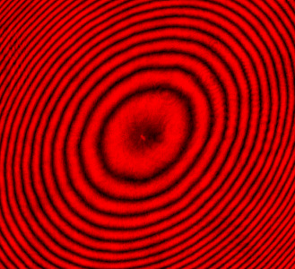
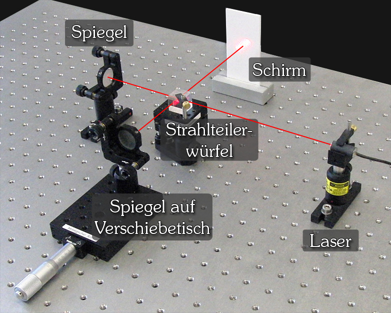
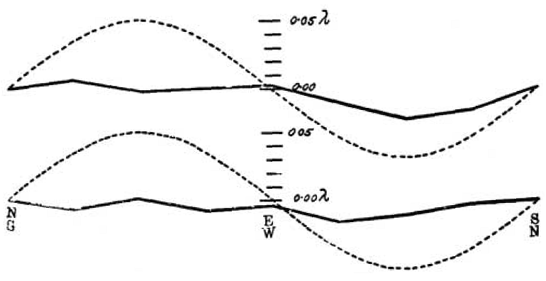
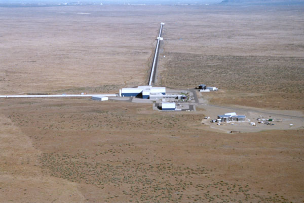
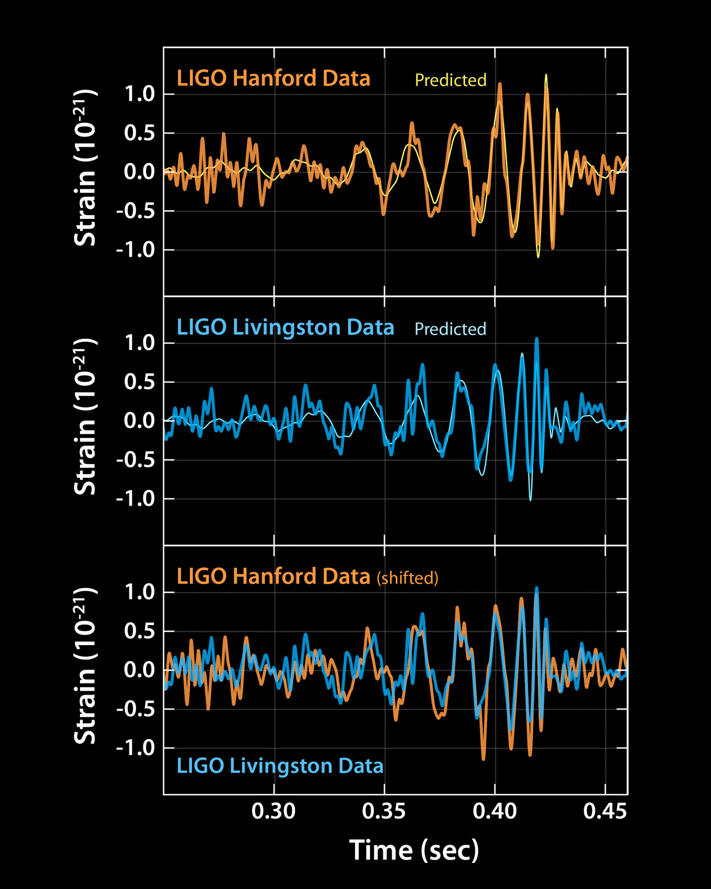

Optică ondulatorie · clasa a XII-a
Prin ce se propagă
lumina?
În anii 1800, fizicienii știau că lumina se comportă ca o undă. Dar orice undă cunoscută avea ceva prin care se propaga. Valurile aveau apa. Sunetul avea aerul. Atunci prin ce se deplasa lumina prin spațiul aparent gol?
Ideea lor: eterul
Fizicienii au presupus că întreg spațiul e umplut de un mediu invizibil numit eter luminifer. Nu era aer și nu era doar „în spațiu". În modelul lor, eterul era peste tot, inclusiv în jurul și prin laboratorul de pe Pământ.
De ce credeau că există eter?
Pentru că lumina era undă, iar toate undele cunoscute aveau un mediu. Părea firesc să existe și pentru lumină. Era o presupunere rezonabilă, nu o prostie. Și, spre deosebire de multe presupuneri, se putea testa.
De ce ar fi eter
și pe Pământ?
Apasă pe cele trei trepte și urmărește punctele albastre: sunt aceleași la toate scările.
De ce ar fi eter și pe Pământ?
Pentru că eterul nu era imaginat ca atmosfera Pământului. Era presupus un mediu universal, care umple tot spațiul. Pământul ar fi fost practic scufundat în el, ca un pește în apă.
Vântul de eter
Scoate mâna pe geamul mașinii în mers: simți un vânt, deși aerul stă pe loc. Nu aerul se mișcă: tu te miști prin el.
Același raționament, aplicat Pământului: dacă eterul stă pe loc și planeta îl străbate cu 30 km/s, atunci în laborator ar trebui să se simtă un „vânt de eter". Iar dacă bate un vânt, lumina care merge în lungul lui ar trebui să se comporte altfel decât cea care merge de-a curmezișul.
Rămâne o singură problemă: cum măsori așa ceva, când lumina merge cu 300 000 km/s?
ordinul de mărime
O parte dintr-o sută de milioane. De asta nimeni nu reușise să-l măsoare.
Analogia râului
Doi înotători, aceeași distanță, aceeași viteză prin apă. Unul traversează râul și se întoarce, celălalt înoată în lungul curentului și se întoarce. Pune curentul pe zero și privește: se întorc simultan.
Cel care înoată în lungul curentului câștigă timp la dus, cu curentul, dar pierde mai mult la întoarcere, contra lui, pentru că petrece mai mult timp în porțiunea lentă. Asta era ideea lui Michelson: dacă eterul există în forma presupusă, două raze trimise pe direcții diferite ar trebui să aibă timpi de parcurs puțin diferiți.
Cum cronometrezi lumina?
Diferența de timp căutată e de ordinul a 10⁻¹⁶ secunde. Niciun cronometru din 1887, și niciunul de azi, nu poate măsura direct așa ceva.
Soluția lui Michelson: nu cronometra deloc. Lasă cele două raze să se întâlnească din nou. Dacă una a întârziat fie și cu o fracțiune de lungime de undă, undele nu mai sunt sincronizate, iar asta se vede cu ochiul liber, ca întuneric acolo unde te-ai aștepta la lumină.
Cum știe că una a întârziat, dacă n-o cronometrează?
Nu măsoară timpul, ci consecința lui. Două unde decalate dau alt rezultat când se adună: mai multă lumină, mai puțină, sau deloc. Instrumentul transformă o întârziere imposibil de cronometrat într-o schimbare de luminozitate.
Construiește interferometrul
Cum împarte lumina în două?
Cu o lamă semitransparentă: o placă de sticlă cu un strat metalic de câțiva nanometri. Jumătate din lumină trece prin ea, jumătate e reflectată în unghi drept. Nu taie fasciculul în bucăți, ci îl împarte pe amândouă direcțiile deodată.
După oglindă, unde se întoarce raza?
Exact de unde a venit: la aceeași lamă separatoare. Oglinzile sunt perpendiculare pe fascicul, deci îl trimit înapoi pe același drum.
Cum ajung iar împreună?
Aici e locul unde majoritatea explicațiilor sar peste pas. Zoom pe lama separatoare: raza A vine de sus, raza B vine din dreapta. Din A, o componentă e transmisă prin lamă spre detector. Din B, o componentă e reflectată de lamă spre același detector.
Cum ajung razele iar împreună?
Nu se „lipesc" și nu se amestecă. Una este reflectată, cealaltă transmisă, iar amândouă pleacă pe aceeași ieșire, către același detector. În desenul de mai sus sunt trasate alături doar ca să se vadă că sunt două drumuri diferite. În realitate se suprapun.
Ce înseamnă „se suprapun"?
Cele două fascicule ocupă aceeași regiune din spațiu. Fiecare e o undă electromagnetică, adică un câmp electric care oscilează. Acolo unde se întâlnesc, câmpurile se adună punct cu punct, ca două valuri care trec unul prin altul.
Ce înseamnă exact „se suprapun"?
Că în fiecare punct și în fiecare moment, câmpul electric total este suma celor două câmpuri. Dacă amândouă „urcă" în același timp, suma e mai mare. Dacă una urcă în timp ce cealaltă coboară, se anulează.
Detectorul nu vede câmpul, ci pătratul lui, mediat în timp. De aceea două unde care se anulează dau întuneric, nu „jumătate de lumină".
Faza: cât de decalate
sunt cele două unde
Ce este faza, pe scurt?
Faza = cât de decalate sunt cele două unde. Zero înseamnă că urcă și coboară împreună. 180° înseamnă că una urcă exact când cealaltă coboară.
Mișcă oglinda
Cum produci un decalaj? Faci un drum mai lung decât celălalt. Mută oglinda și urmărește cum se propagă efectul prin toate cele cinci reprezentări: toate citesc aceeași stare.
De ce contează de două ori
Ai văzut animația: muți oglinda cu 147 nm și se face întuneric. Dar λ/2 pentru sodiu înseamnă 295 nm. De ce a fost destul jumătate?
Lumina parcurge brațul de două ori. Oglinda merge cu Δx, drumul optic crește cu 2Δx. Abia acum formula are sens, pentru că ai văzut întâi ce face.
Asta face din interferometru o riglă: numeri franjele care trec și afli deplasarea. Între 1960 și 1983, chiar metrul a fost definit așa, ca 1 650 763,73 lungimi de undă ale kriptonului-86.
exemplu numeric, cu sodiu
De ce mutarea oglinzii contează de două ori?
Dus + întors. Lumina străbate distanța adăugată o dată la ducere și încă o dată la întoarcere, deci drumul optic se schimbă cu dublul deplasării.
Cum apar franjele
Până acum am privit un singur punct. Pe un ecran întreg, fiecare direcție are propria diferență de drum, de aceea apar inele. Plimbă mouse-ul peste ecran ca să citești valorile în punctul țintit.

.jpeg){kind=link}

{kind=link}
De ce rotea Michelson aparatul?
Acum ai instrumentul: o riglă care sesizează diferențe de drum de sub o miime de milimetru, exact ordinul de mărime al efectului prezis de eter. Mai lipsea un singur truc.
Prin rotirea aparatului, cele două brațe își schimbă rolurile față de presupusul vânt de eter: cel paralel devine perpendicular și invers.
Dacă vântul produce într-adevăr diferența de timp, atunci rotirea trebuie să schimbe faza, deci franjele trebuie să se miște. Asta poți măsura, chiar fără să cunoști diferența de referință.
De ce rotește aparatul?
Ca brațele să-și schimbe orientarea față de presupusul vânt de eter. Efectul ar trebui să se inverseze, iar o inversare se vede, pe când o valoare absolută necunoscută nu.
Prezice rezultatul
Cu brațul efectiv de 11 metri din 1887 și cu Pământul la 30 km/s, modelul eterului prezice o deplasare de aproximativ 0,4 franje la rotirea cu 90°, de patruzeci de ori peste ce se putea citi. Ce crezi că s-a văzut?
de modelul eterului
Aceasta este predicția modelului istoric al eterului staționar, nu a fizicii de azi.
ce prezici?
Predicție vs. 1887

{kind=link}
Liniile continue sunt măsurătorile. Liniile punctate sunt predicția modelului. Iar autorii o desenaseră deja redusă la o optime, altfel n-ar fi încăput în figură. Chiar și micșorată de opt ori, predicția rămâne vizibil mai mare decât tot ce s-a măsurat.

{kind=link}

{kind=link}
Efectul așteptat
nu a apărut.
Formulat precis: experimentul Michelson–Morley nu a detectat mișcarea relativă față de eter în forma prezisă de modelul clasic al unui eter staționar.
Nu „a demonstrat că eterul nu există": asta n-ar fi putut face niciun experiment singur. A arătat că, dacă eterul există, nu se comportă deloc cum cerea teoria. Iar un rezultat nul obținut cu un aparat de patruzeci de ori mai sensibil decât efectul căutat este el însuși un rezultat, nu un eșec.
Deci ce a demonstrat, până la urmă?
Că efectul prezis de modelul clasic al eterului staționar nu se observă. Atât, dar e enorm: a obligat fizica să caute altă explicație, iar căutarea aceea a durat optsprezece ani.
Unde intră Einstein
Relativitatea nu s-a născut dintr-un singur experiment. A fost un drum de douăzeci de ani, cu mai mulți autori și cu mai multe încercări de a salva eterul.
- 1881
Primul interferometru, la Potsdam
Sensibilitate insuficientă, dar principiul funcționează.
- 1887
Michelson–Morley, Cleveland
Rezultat nul, cu un aparat mult mai sensibil decât efectul căutat.
- 1889–1892
FitzGerald și Lorentz
Propun contracția lungimilor: obiectele s-ar scurta pe direcția mișcării, ascunzând exact efectul. O încercare de a salva eterul.
- 1904
Transformările Lorentz
Formalismul matematic e complet, dar interpretat încă în termeni de eter.
- 1905
Einstein
Renunță la eter cu totul și ia constanța vitezei luminii ca postulat. Aceleași ecuații, alt fundament.
- 1907
Nobel pentru Michelson
Pentru instrumentele optice de precizie, nu pentru relativitate.
Deci Michelson a demonstrat relativitatea?
Nu. Experimentul a fost o piesă importantă din context, dar relativitatea restrânsă a apărut din alt raționament, al lui Einstein, optsprezece ani mai târziu. Einstein însuși a relatat diferit, în momente diferite, cât de mult a cântărit acest experiment pentru el.
Explore more
De aici încolo, lucruri care nu erau necesare pentru poveste, dar care arată cât de departe merge instrumentul.
Cântărește aerulindicele de refracție
Geometria nu se schimbă, dar franjele se mișcă. De ce? Pentru că lumina nu măsoară distanța, ci timpul de parcurs: drumul optic e n·L.
gazul din tub
OPL = n·Ldrum optic δ = 2(n−1)Lce adaugă gazul
LIGOacelași aparat, brațe de 4 km
Desparte → parcurge → reflectă → recombină → citește diferența de fază. Exact pașii din capitolul 6, la altă scară: LIGO măsoară o variație de drum de 10⁻¹⁸ metri.

{kind=link}

{kind=link}
Prezici, apoi verificișase provocări
0 / 6 corecte
Formulele complete sunt în sertarul ƒ Formule din bara de sus, cu valorile curente înlocuite numeric.